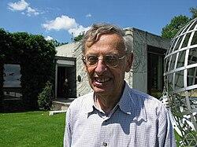

Elias M. Stein | |
|---|---|
 Stein in 2008 | |
| Born | January 13, 1931 Antwerp, Belgium |
| Died | December 23, 2018 (aged 87) Somerville, New Jersey, U.S. |
| Alma mater | University of Chicago (Ph.D., 1955) |
| Known for | Stein–Strömberg theorem Princeton Lectures on Analysis textbook series |
| Spouse | Elly Intrator |
| Children | Karen Stein Jeremy C. Stein |
| Awards | Rolf Schock Prize in Mathematics (1993) Wolf Prize (1999) National Medal of Science (2001) Leroy P. Steele Prize (2002) |
| Scientific career | |
| Fields | Mathematics |
| Institutions | Princeton University |
| Thesis | Linear Operators on Lp Spaces (1955) |
| Antoni Zygmund | |
Doctoral students | |
{kind=link}
Elias Menachem Stein (January 13, 1931 – December 23, 2018) was an American mathematician who was a leading figure in the field of harmonic analysis. He was the Albert Baldwin Dod Professor of Mathematics, Emeritus, at Princeton University, where he was a faculty member from 1963 until his death in 2018.
Biography
Stein was born in Antwerp, Belgium, to Elkan Stein and Chana Goldman, Ashkenazi Jews from Belgium.[1] After the German invasion in 1940, the Stein family fled to the United States, first arriving in New York City.[1] He graduated from Stuyvesant High School in 1949,[1] where he was classmates with future Fields Medal recipient Paul Cohen,[2] before moving on to the University of Chicago for college. In 1955, Stein earned a Ph.D. from the University of Chicago under the direction of Antoni Zygmund. He began teaching at MIT in 1955, moved to the University of Chicago in 1958 as an assistant professor, and in 1963 became a full professor at Princeton.
Stein worked primarily in the field of harmonic analysis, and made contributions in both extending and clarifying Calderón–Zygmund theory. These include Stein interpolation (a variable-parameter version of complex interpolation), the Stein maximal principle (showing that under many circumstances, almost everywhere convergence is equivalent to the boundedness of a maximal function), Stein complementary series representations, Nikishin–Pisier–Stein factorization in operator theory, the Tomas–Stein restriction theorem in Fourier analysis, the Kunze–Stein phenomenon in convolution on semisimple groups, the Cotlar–Stein lemma concerning the sum of almost orthogonal operators, and the Fefferman–Stein theory of the Hardy space and the space of functions of bounded mean oscillation.
He wrote numerous books on harmonic analysis (see e.g. [1,3,5]), which are often cited as the standard references on the subject. His Princeton Lectures in Analysis series [6,7,8,9] were penned for his sequence of undergraduate courses on analysis at Princeton. Stein was also noted as having trained a high number of graduate students. According to the Mathematics Genealogy Project, Stein had at least 52 graduate students—including the Fields Medal recipients Charles Fefferman and Terence Tao—some of whom went on to shape modern Fourier analysis.
His honors included the Steele Prize (1984 and 2002), the Schock Prize in Mathematics (1993), the Wolf Prize in Mathematics (1999), and the National Medal of Science (2001). In addition, he had fellowships to National Science Foundation, Sloan Foundation, Guggenheim Foundation, and National Academy of Sciences. Stein was elected as a member of the American Academy of Arts and Sciences in 1982.[3] In 2005, Stein was awarded the Stefan Bergman prize in recognition of his contributions in real, complex, and harmonic analysis. In 2012 he became a fellow of the American Mathematical Society.[4]
Personal life
In 1959, he married Elly Intrator.[1] They had two children, Karen Stein and Jeremy C. Stein,[1] and grandchildren named Alison, Jason, and Carolyn. His son Jeremy is a professor of financial economics at Harvard, former adviser to Tim Geithner and Lawrence Summers, and served on the Federal Reserve Board of Governors from 2012 to 2014. Elias Stein died of complications of lymphoma in 2018, aged 87.[5]
Bibliography
- Stein, Elias (1970). Singular Integrals and Differentiability Properties of Functions. Princeton University Press. ISBN 0-691-08079-8.
- Stein, Elias (1970). Topics in Harmonic Analysis Related to the Littlewood-Paley Theory. Princeton University Press. ISBN 0-691-08067-4.
- Stein, Elias; Weiss, Guido (1971). Introduction to Fourier Analysis on Euclidean Spaces. Princeton University Press. ISBN 0-691-08078-X.
- Stein, Elias (1971). Analytic Continuation of Group Representations. Princeton University Press. ISBN 0-300-01428-7.
- Nagel, Alexander (1979). Lectures on Pseudo-differential Operators: Regularity Theorems and Applications to Non-elliptic Problems. Princeton University Press. ISBN 978-0-691-08247-9.[6]
- Stein, Elias (1993). Harmonic Analysis: Real-variable Methods, Orthogonality and Oscillatory Integrals. Princeton University Press. ISBN 0-691-03216-5.[7]
- Stein, Elias; Shakarchi, R. (2003). Fourier Analysis: An Introduction. Princeton University Press. ISBN 0-691-11384-X. 2011 reprint
- Stein, Elias; Shakarchi, R. (2003). Complex Analysis. Princeton University Press. ISBN 0-691-11385-8. 2010 reprint
- Stein, Elias; Shakarchi, R. (2005). Real Analysis: Measure Theory, Integration, and Hilbert Spaces. Princeton University Press. ISBN 0-691-11386-6. 2009 reprint
- Stein, Elias; Shakarchi, R. (2011). Functional Analysis: An Introduction to Further Topics in Analysis. Princeton University Press. ISBN 978-0-691-11387-6.
Notes
- ^ a b c d e University of St Andrews, Scotland - School of Mathematics and Statistics: "Elias Menachem Stein" by J.J. O'Connor and E F Robertson February 2010
- ^ "Stuyvesant High School Endowment Fund". Archived from the original on 2014-01-11. Retrieved 2013-07-07.
- ^ "Elias Menachem Stein". American Academy of Arts & Sciences. Retrieved 2020-05-26.
- ^ List of Fellows of the American Mathematical Society, retrieved 2013-08-05.
- ^ Chang, Kenneth (2019-01-14). "Elias M. Stein, Mathematician of Fluctuations, is Dead at 87". The New York Times.
- ^ Beals, Richard (1980). "Review: Lectures on pseudo-differential operators: Regularity Theorems and applications to non-elliptic problems, by Alexander Nagel and E. M. Stein" (PDF). Bull. Amer. Math. Soc. (N.S.). 3 (3): 1069–1074. doi:10.1090/s0273-0979-1980-14859-4.
- ^ Ricci, Fulvio (1999). "Review: Harmonic Analysis: Real-variable Methods, Orthogonality and Oscillatory Integrals, by Elias Stein". Bull. Amer. Math. Soc. (N.S.). 36 (4): 505–521. doi:10.1090/s0273-0979-99-00792-2.
References
- This article incorporates material from Elias Stein on PlanetMath, which is licensed under the Creative Commons Attribution/Share-Alike License.
External links
- O'Connor, John J.; Robertson, Edmund F., "Elias M. Stein", MacTutor History of Mathematics Archive, University of St Andrews
- Elias M. Stein at the Mathematics Genealogy Project
- Citation for Elias Stein for the 2002 Steele prize for lifetime achievement
- Elias Stein Curriculum Vitae
- Fefferman, Charles; Ionescu, Alex; Tao, Terence; Wainger, Stephen (October 2020). "Analysis and applications: The mathematical work of Elias Stein". Bulletin of the American Mathematical Society. 57 (4): 523–594. doi:10.1090/bull/1691.
- "Simons Foundation: Elias Stein". Simons Foundation. 2017-03-13. – Extended video interview.
- "Elias M. Stein (1931–2018)" (PDF). Notices of the American Mathematical Society. pp. 546–563. Retrieved 2025-08-16.